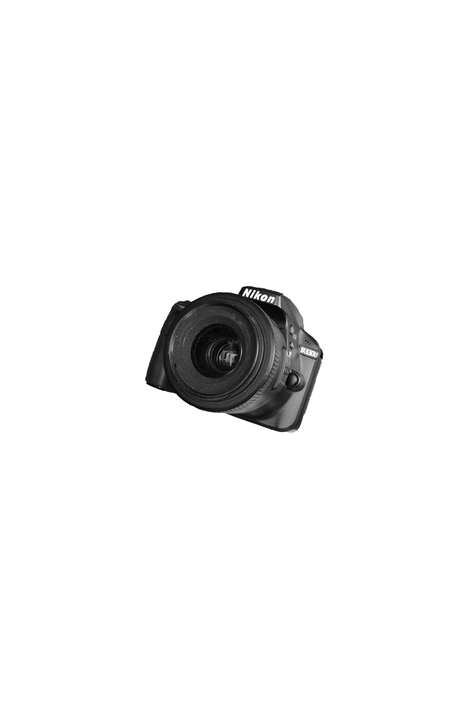
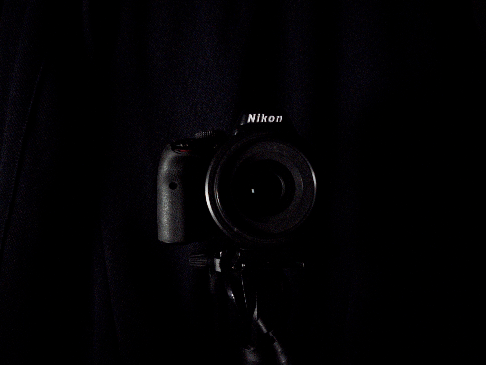
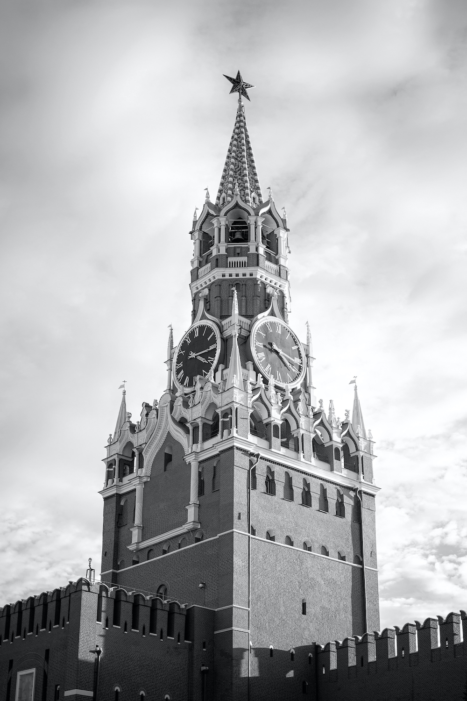

photos
videos
moscow
unseen

nikita ivanov
my name is nikita ivanov. i am an amateur photographer based in Moscow and Lausanne. i say amateur but, in the future, i would like to make this passion a full-time job, hence this portifolio. as you may noticed my photos mostly consist of portraits. my style is fairly simple. i don't pass my photos through photoshop, only lightroom. i try to stay as real and natural as possible. i only concentrate on the colors.
© Nikita Ivanov 2020